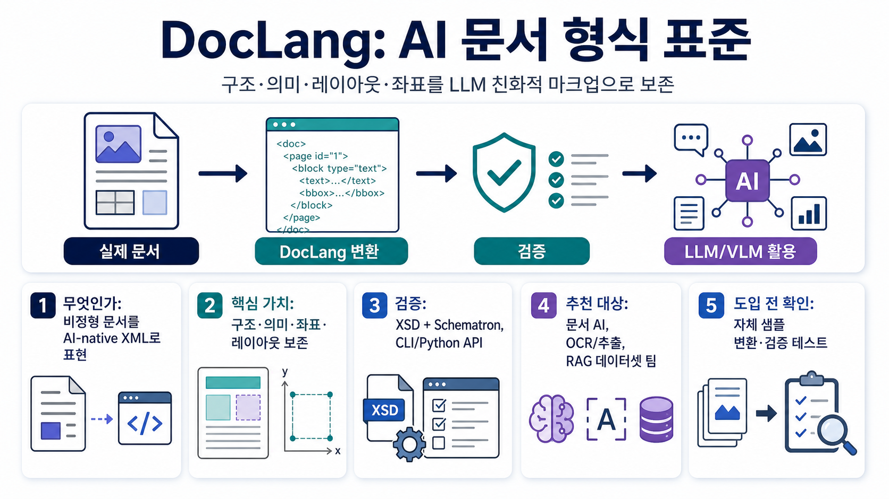

렌더링 중심 형식의 손실
기존 PDF/HTML/Word 변환 과정에서는 문서가 어떻게 보이는지는 남아도, 구조·의미·관계가 흐려질 수 있습니다.

문서의 구조·의미·레이아웃·좌표를 하나의 명확한 XML 표현으로 보존해 LLM/VLM 파이프라인에서 쓰기 쉽게 만드는 저장소입니다.
개발자가 이 저장소를 활용하는 방식은 단순합니다.
PDF, OCR 결과, 문서 추출 결과를 입력으로 둡니다.
문서 구성요소를 XML 기반 태그와 속성으로 정리합니다.
XSD와 Schematron으로 구조와 규칙 위반을 확인합니다.
LLM/VLM, RAG, 데이터셋 구축에 안정적으로 투입합니다.
기존 PDF/HTML/Word 변환 과정에서는 문서가 어떻게 보이는지는 남아도, 구조·의미·관계가 흐려질 수 있습니다.
DocLang는 제한된 태그와 명확한 규칙을 지향해 LLM이 생성·소비하기 쉬운 표현을 목표로 합니다.
표, 수식, 코드, 목록, 차트, 양식, 좌표 같은 실무 문서 요소를 다룹니다.
spec.md가 핵심 규격 문서exports/에 PDF/DOCX 등 내보낸 문서doclang/에 CLI·Python APIexamples/와 tests/data/ 중심문서 AI 파이프라인, OCR/문서추출, LLM용 구조화 데이터셋, RAG 전처리 표준을 고민하는 팀.
자체 문서 샘플을 DocLang로 표현했을 때 필요한 의미·좌표·표 구조가 충분히 보존되는지 확인해야 합니다.
Python 3.10 이상, lxml, saxonche, typer 기반의 doclang validate CLI를 제공합니다.
최근 v0.6.0 릴리스에서 <picture>와 차트 테이블 관련 변경이 있었고, 명세와 검증기가 함께 업데이트되고 있습니다.